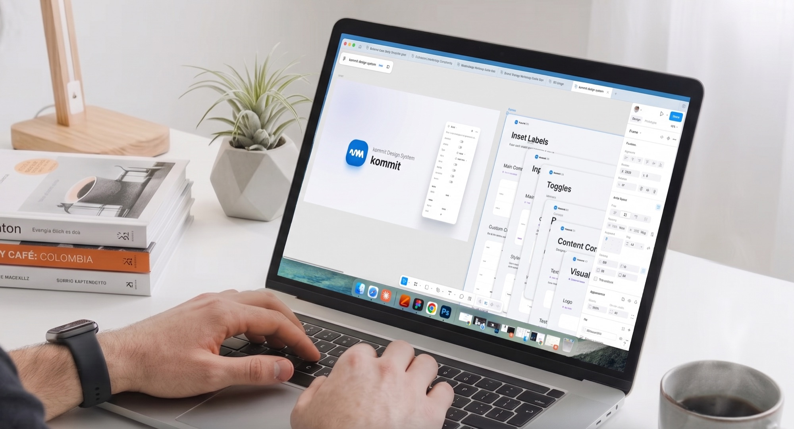
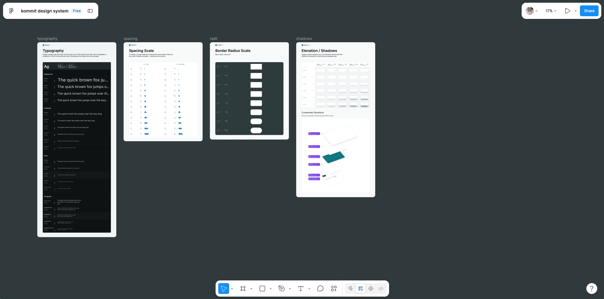
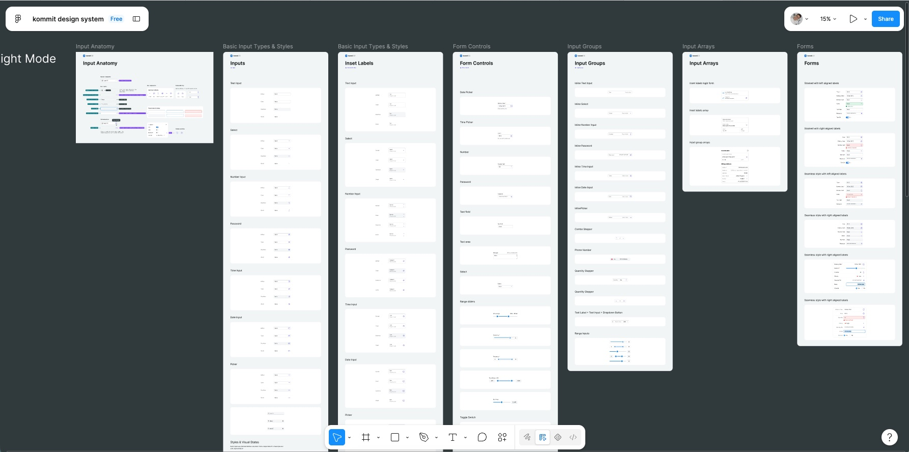
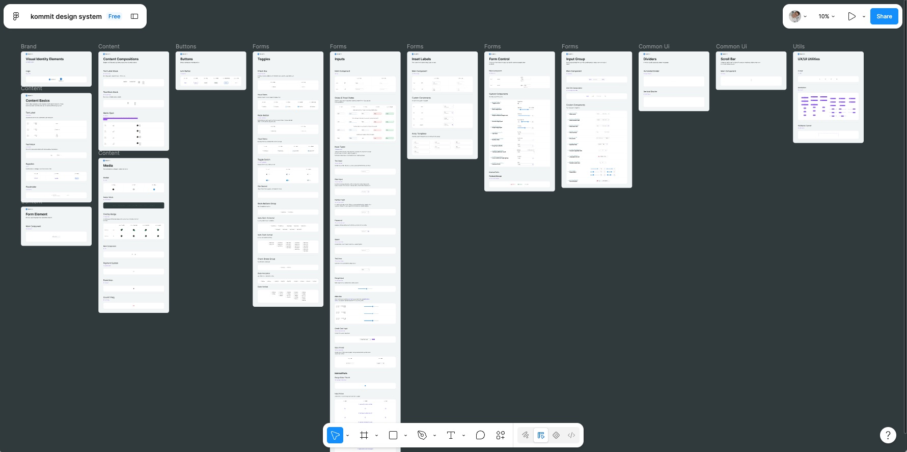

El sistema de diseño que unifica la marca y el producto digital de Kommit.

Kommit no tenía un design system cuando inicié. Eso significaba inconsistencia visual, componentes duplicados, procesos ad-hoc entre diseño y desarrollo.
El reto fue doble: crear un design system desde cero que fuera la base para Portal Kommit, en paralelo con la construcción de la marca corporativa de Kommit. Sistema y brand tenían que nacer juntos.
Un design system no es documentación bonita. Es el lenguaje compartido entre diseño, producto y desarrollo.


Como Lead Designer, construí Kommit Design System desde cero:
Definí paleta cromática (K-Blue, K-Cyan, neutrals), tipografía (Manrope + monospace), grid system (8px base), elevación, sombras, spacing. Todo parametrizado para escalar.
Construí biblioteca de componentes: Button (variantes: primary, secondary, danger), Input, Select, Datepicker, Table, Modal, Card, Navigation. Cada uno con estados: default, hover, active, disabled, error, loading.
A medida que Portal Kommit evolucionaba, el sistema evolucionaba. v1 fue MVP básico. v5 (actual) incluye: componentes avanzados, accesibilidad mejorada, dark/light mode, documentación completa, handoff dev automatizado.
Documenté el sistema en formato que Claude Design pudiera interpretar. Esto permitió que el equipo usara IA para acelerar generación de componentes nuevos sin perder coherencia visual.
Establecí workflow claro: Figma → Design tokens exportados → Frontend implementa componentes → QA valida. Cada componente tenía documentación de props, estados y casos de uso.

Kommit Design System es hoy el estándar visual de la compañía. 12+ módulos de Portal Kommit se construyeron sobre esta base sin inconsistencias visuales.
Impacto:
Status hoy: Activo y mantenido. Es la guía para todo lo relacionado con UI y diseño de material en Kommit. El equipo lo consulta diariamente.